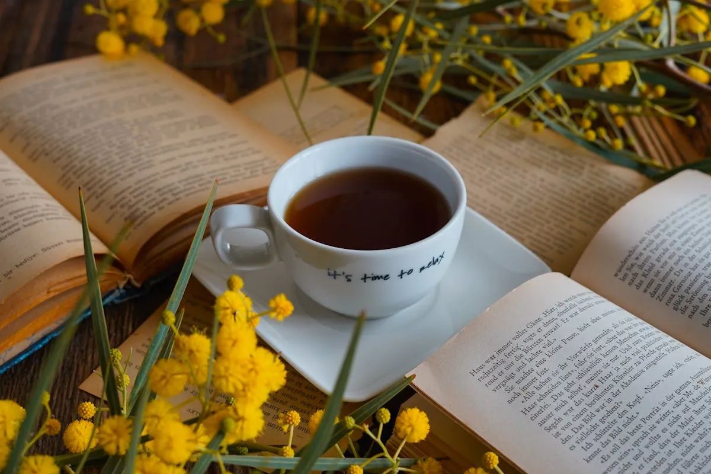

「最近なんだか心がざわざわする」「自分だけの時間がない」
30代・40代女性の心を整えるセルフケアの趣味を、サンドアート講師がご紹介します。
ストレス発散・マインドフルネス・一人時間の過ごし方として、大人の女性に選ばれている10の趣味を厳選しました。
この記事でわかること
大人女性に「セルフケア趣味」が必要な理由
毎日を忙しく走り抜けている30代・40代女性にとって、「セルフケアの時間」はもはや贅沢ではなく、心と体を守るための必需品です。特に、手を動かして没頭できる趣味は、ストレス発散と癒しの両方を叶えてくれる最強のセルフケアツール。まずは、なぜ今「大人の趣味」が必要とされているのかを見ていきましょう。
仕事・家事・育児で疲弊する現代女性
キャリアを追いかけながら、家事・育児・パートナーシップまで背負う現代女性。「自分のことは後回し」が当たり前になっていませんか？心と体は確実に疲れを蓄積しているのに、休むきっかけすら失ってしまうのが怖いところです。
30代・40代は、ホルモンバランスの変化もあり、小さな不調が積み重なりやすい年代。だからこそ、自分を労わる「セルフケア時間」を意識的に確保することが大切です。趣味は義務ではなく、自分を取り戻す手段。気軽に始められる大人の趣味こそ、今の女性にぴったりのセルフケアになります。
「何もしない時間」より「手を動かす時間」が効果的
「疲れたから、何もしないでゴロゴロ…」というリラックス方法も大切ですが、実は「手を動かして没頭する時間」のほうが脳のリフレッシュ効果が高いと言われています。
頭の中でぐるぐる回る心配事や仕事の段取り——こうした思考のループから抜け出すには、別のことに集中するのが一番。手を動かす趣味は、呼吸を整え、今この瞬間に意識を戻してくれるマインドフルネスな時間になります。「ぼーっとしても心が晴れない」という方こそ、手を動かすセルフケアを試してみてください。
SNS疲れから離れる癒しの時間
気づけばスマホを握りしめ、SNSのタイムラインを延々とスクロール——そんな日常にうんざりしていませんか？情報過多と他人の暮らしの眩しさは、気づかないうちに心を削っていきます。
デジタルから離れ、「自分の手で何かを作る」体験は、SNS疲れに効く最良の処方箋。スマホを置いて、色や手触り、自分の感覚に意識を向ける時間が、驚くほど心を軽くしてくれます。
セルフケアに最適な大人の趣味10選
ここからは、30代・40代女性のセルフケアに特におすすめの趣味10選をご紹介します。どれも「一人時間の過ごし方」として自宅で気軽に始められるものばかり。気になるものから取り入れてみてくださいね。
1. サンドアート（2,000円〜・オンラインOK・失敗がない）
筆者一押しのセルフケア趣味が、サンドアートです。色とりどりの砂をグラスに重ねていくだけで、世界にひとつだけの作品が完成する癒しのアート。
- 絵が苦手でもOK。どんな配色でも美しく仕上がるから「失敗がない」
- 2,000円〜の気軽な料金で、材料キットが自宅に届く
- オンラインで全国対応。30〜60分でできる「隙間時間の癒し」
- 砂の手触りと色に没頭する時間は、自然とマインドフルネス状態に
特に「手を動かす趣味で心を整えたい」30代・40代女性に選ばれています。講師と1対1でやり取りできるので、自分のペースで集中できるのも嬉しいポイント。
2. ハーブティー・お茶の時間
お湯を沸かし、香りを楽しみ、ゆっくりと一杯を味わう——「お茶の時間」は最もシンプルなセルフケアです。カモミール・ラベンダー・ペパーミントなど、気分に合わせてハーブを選ぶ時間も楽しい。お気に入りのカップを用意するだけで、日常が少し豊かになります。
3. 読書・日記（ジャーナリング）
本の世界に没頭する時間は、思考のリセットに最適。最近話題のジャーナリング（自分の気持ちを紙に書き出す習慣）は、心のモヤモヤを整理するセルフケアとして効果抜群です。ノートとペンがあればすぐに始められます。
4. ヨガ・ストレッチ
体をゆっくり動かすヨガやストレッチは、体の緊張をほぐすだけでなく呼吸を整えることで心も整うセルフケアの定番。朝の5分、寝る前の10分だけでも続けることで、体と心のバランスが変わっていきます。
5. 観葉植物のお世話
緑のある暮らしは、それだけで心を落ち着かせてくれます。水やり・葉の手入れなど、植物との「小さなやり取り」が日々の癒しに。育てる楽しみと、成長する喜びが、暮らしに彩りを添えてくれます。
6. アロマテラピー
香りは直接、脳に働きかけるセルフケアツール。ラベンダーはリラックス、柑橘系は気分転換など、目的に合わせて選べるのが魅力。アロマディフューザー一台で、部屋全体が癒しの空間に変わります。
7. ハンドメイド（編み物・刺繍）
無心で手を動かす編み物や刺繍は、「手を動かす瞑想」とも呼ばれる集中系セルフケア。一目一目に集中するうちに、雑念が消えていきます。完成品が実用品になるのも嬉しいポイント。
8. 料理・お菓子作り
作って、食べて、誰かと分かち合う——料理は五感をフルに使う贅沢な時間。特にお菓子作りは計量や工程に集中することで、思考をリセットできるセルフケアに。
9. 瞑想・マインドフルネス
1日5分、静かに呼吸に意識を向けるだけでOK。アプリを使えば初心者でも気軽に始められます。マインドフルネスは、今この瞬間に戻る練習。日々の積み重ねで、心のざわつきが減っていくのを実感できるはず。
10. 音楽・楽器演奏
好きな音楽を聴く、口ずさむ、楽器を弾く——音楽は感情を動かしてくれる万能のセルフケア。大人になって始めるピアノやウクレレは、「できなかったことができる」達成感も味わえる一石二鳥の趣味です。
「大人のサンドアート体験、LINEで気軽に予約♪」
材料キットが届いて自宅で体験。2,000円〜・スマホOK。
セルフケアの時間を始めたい方、まずはお気軽にご相談ください。
「続けられる」セルフケア趣味の選び方
せっかく始めた趣味も、続かなければ意味がありません。30代・40代の忙しい女性が「無理なく続けられる」セルフケア趣味を選ぶための4つのポイントをお伝えします。
短時間（30分〜）で完結するもの
「1時間以上ないと始められない」趣味は、忙しい大人女性にはハードルが高め。30分〜60分で区切りがつく趣味を選ぶと、スキマ時間に取り入れやすく、長く続けられます。サンドアートやジャーナリング、短いヨガなどが代表例です。
家でできる（外出不要）
「お教室に通う時間がない…」という方こそ、自宅で完結する趣味を選びましょう。オンライン体験や家でできるハンドメイドなら、移動時間ゼロ。疲れている日でもベッドから起き上がるだけで始められます。
手軽に始められる料金
いきなり高額な初期費用がかかる趣味は、続かなかったときに罪悪感が残ります。数千円で始められる手軽な趣味から試してみて、本当に続けたいと思えたら徐々に道具を揃えていくのがおすすめです。サンドアートは2,000円〜体験できるので、最初の一歩にぴったり。
成果が見える（作品が残る）
作品や記録として「成果が目に見える」趣味は、達成感が自己肯定感を育ててくれるのが魅力。サンドアートは完成品をそのままインテリアにできますし、ジャーナリングはノートに積み重なっていく。「私、続けられてる」という自己効力感は、日々のメンタルを支える土台になります。
サンドアートが大人女性のセルフケアに最適な5つの理由
数ある大人の趣味の中でも、サンドアートが特にセルフケア目的の女性に選ばれている理由を5つご紹介します。
理由1：失敗がない安心感
サンドアート最大の魅力は、どんな配色でも美しく仕上がること。「上手に描けなかった」という挫折感がゼロ。不器用さや絵の苦手意識に悩んできた方ほど、完成した瞬間の「できた！」という喜びが大きいのが特徴です。
理由2：「無」になれる瞑想的な時間
色のついた砂をサラサラとグラスに重ねる動作は、驚くほど心を静めてくれる瞑想的な時間。頭の中のざわつきが消え、「今この瞬間」に意識が集中するマインドフルネス効果があります。簡単なマインドフルネスとしても人気の理由です。
理由3：作品が残る達成感
完成したサンドアートはそのまま部屋のインテリアに。「頑張った自分の証」が目に見える形で残る達成感は、日常の中でじわじわと自信を育ててくれます。見るたびに「あの時の集中した時間」を思い出せる、特別なお守りになります。
理由4：オンラインで自宅完結
オンラインサンドアートなら、材料キットが自宅に届いて、スマホ1台で体験できるのが最大の強み。お教室に通う時間も、道具を揃える手間もゼロ。パジャマ姿でも、子どもが寝た後の夜22時でも、自分のタイミングで体験できます。
理由5：色で感情を表現できる
その日の気分で色を選ぶ行為は、カラーセラピー的なセルフケアでもあります。明るい色を選ぶ日、落ち着いた色を選ぶ日——色の選択から、自分の心の状態が見えてくる面白さも。言葉にならない感情を、色で表現する癒しの時間になります。
料金の目安
サンドアート体験・レッスンの料金目安はこちらです。自分に合ったプランから始めてみてくださいね。
| オンライン体験 | 2,000円/人〜 （材料キット付き・送料別途） |
|---|---|
| 継続レッスン | 月1回〜ご相談可能 （続けて作品を作りたい方向け） |
| オーダーメイド | ご希望に合わせて制作 （記念日・ギフト・インテリアに） |
| 所要時間 | 約30〜60分 |
| 対象 | 大人女性・男性どなたでも |
| 必要なもの | スマホ or タブレット or PC |
よくある質問
1人で参加しても浮きませんか？
ご安心ください。大人女性の7割が「1人で自分時間を楽しむ」目的で参加されています。オンラインは特に1対1レッスンが基本なので、他の参加者の目を気にせず、自分のペースで集中できます。
不器用でも大丈夫ですか？
はい、大丈夫です。サンドアートは「失敗がない」アートなので、不器用さに悩む方ほど完成の喜びが大きいんです。どんな配色でも美しく仕上がる特性があるので、達成感をしっかり味わえます。
どのくらいでセルフケア効果を感じますか？
1回目の体験から集中・癒し効果を感じる方が多いです。砂の手触りと色に没頭する30〜60分間は、自然とマインドフルネス状態に入るため、体験後は「頭がスッキリした」「心が軽くなった」とご感想をいただきます。
離れて暮らす友人とオンラインで一緒に参加できますか？
はい、大歓迎です。画面越しでおしゃべりしながら一緒に作品を作る時間は、遠方の友人との再会の場として大好評です。共通の趣味が、離れていてもつながれるきっかけになります。
お申し込み方法
セルフケアの趣味を探している方へ。お申し込みはとっても簡単。LINEで「大人の体験希望」と送るだけ！あとはこちらからご案内します。心を整える自分だけの時間、始めてみませんか？
大人のオンラインサンドアート体験
2,000円/人〜｜材料キット付き｜全国どこでもOK
LINEで「大人の体験希望」と送るだけ！

原野 玲未REMI HARANO
サンドアート講師 / Webエンジニア / 5児の母
福岡県在住。日本サンドアート協会認定講師として年間100件以上のワークショップを開催。「やってみたい」の気持ちを大切に、画面越しでも楽しさが伝わるレッスンを心がけています。